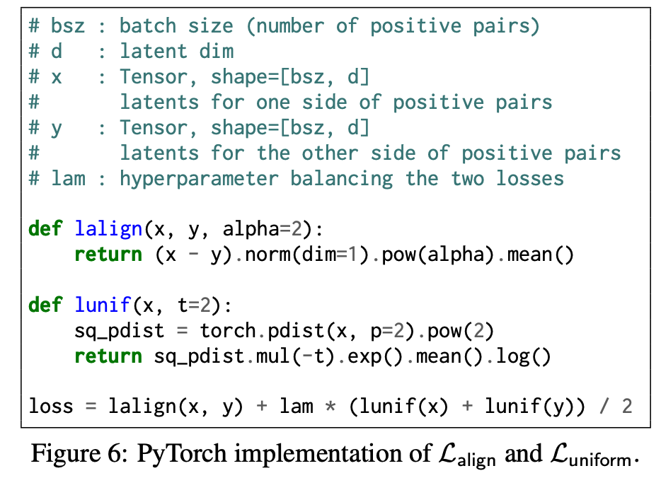
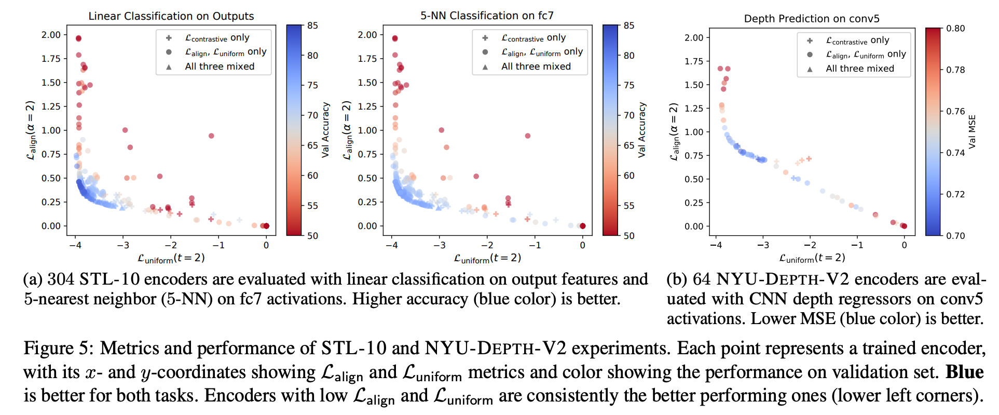

https://arxiv.org/pdf/2005.10242.pdf
著者
Tongzhou Wang (MIT)
Phillip Isola (MIT)
Contrastive representation learning に関連する以下の2つの重要な特性を明らかにする
Alignment: positive pairのどうしの近さ
Uniformity: 超球面上に均一に分布している
漸近的にcontrastive lossがこれらの特性を最適化することを証明し、下流タスクによい影響を与えることを分析する
2つの特性を定量化するための最適化可能なメトリックを導入し、それが下流タスクの性能との間に強い一致があることを実験的に示す
それらを直接最適化することで、下流タスクにおいてContrastive learningと同等かそれ以上の性能を持つ表現が得られる。
positive pairどうしを近づけ、negative pairどうしは遠ざけるようにencoderを学習する手法
この論文ではunsupervisedの設定なので、画像データはpositive pairをその画像をaugmentationして作成することを想定 (negativeは違う画像)
contrastive lossは以下で定義される
\(f\) : encoder, \(p_{\text{data}}\) : data distribution, \(p_{\text{pos}}\) : positive pair of data distribution, \(\tau\) : 温度, \(M\) : 負例の数
この論文では、L2ノルムを1に正規化するので \(f(x)^\top f(y)\) はコサイン類似度
\(L_{\text{contrastive}}\) を最小化するには、期待値の中のところを大きくする必要があって、positive pair \((x,y)\) を類似度を大きく、negative pair \((x_i^-, y)\) の類似度を小さくする (つまり、contrastive learningの思想)
(なんでこの形になるのかは知らないです)
InfoMax principle
representation learningは相互情報量最大化するぞという意気込みで、なんとかタイトな相互情報量の下限を構築するという研究が多く行われてきたが、 タイトな下限を最適化すると逆に下流タスクの精度が下がるという現状が発見されている。 (参考: 相互情報量最大化による表現学習 https://deeplearning.jp/%E7%9B%B8%E4%BA%92%E6%83%85%E5%A0%B1%E9%87%8F%E6%9C%80%E5%A4%A7%E5%8C%96%E3%81%AB%E3%82%88%E3%82%8B%E8%A1%A8%E7%8F%BE%E5%AD%A6%E7%BF%92/)
なので、バウンドの話はおいておいて、contrastive lossの最適化している振る舞いを直接的に分析していく。
先述したとおり、positive pairどうしを近づけ、negative pairどうしは遠ざけるようにするので、次の2つのプロパティを持っているべき
Alignment: positive pairを近くのfeatureにマッピング (本質的でない不要なノイズ要因に対して不変である必要がある)
Uniformity: feature vectorは単位超球面上にほぼ均一に分布して、データ情報を可能な限り保持する必要がある (エントロピーが高いということ?)
「negative pairは遠ざける」と「均一に分布する」にはギャップがあると思った。 均一に分布してもnegative pairが遠ざかっていとは限らないし、逆もそう。
最初から、「negative pairは遠ざける」→「均一に分布する」とは言っていないので、そういうことなのかも
実験による実証
contrastive lossで学習したfeature vectorがどうなっているか見てみる
CIFAR-10、m=2、AlexNetで学習
supervised predictive learning (encoder + linear classifierを同時に学習(分類問題))と unspervised contrastive learningで比べる
Alignment : positive pair (ここでは同じクラスのサンプルのペア?) の距離のヒストグラム。平均がunspervised contrastive learningのほうが左にある
Uniformity : feature vectorのベクトルをKDEしてプロット。 unspervised contrastive learningのほうが均一に分布している。
Quantifying
さらなる分析には、alighmentとuniformityを定量化する方法が必要なので、それ(loss)を提案する。(?)
alignment lossは単純にL2距離で定義する
uniformity lossは、Gaussian potential kernel (RBF kernel) を使って、表現する
ペアワイズ ガウスポテンシャルの平均は、単位超球面上の一様分布とうまく結びついている (らしい)
Limiting Behavior of Contrastive Learning
Mを \(\infty\) に飛ばしたときにcontrastive lossがどうなるか観察する
Theorem 1.
となって、以下が得られる
第一項が最小値 \(\Leftrightarrow f\) は perfectly aligned
perfectl uniform encodersが存在するなら、それは第二項の最小値
極限からの絶対偏差は \(\mathcal{O}(M^{-1/2})\) で減衰する
(定義)
Perfect Alignmentの定義: \((x,y) \sim p_{\text{pos}}\) で \(f(x)=f(y)\) がほとんど成り立つとき、 \(f\) はperfectly aligned
Perfect Uniformityの定義: \(x \sim p_{\text{data}}\) で \(f(x)\) の分布が単位超球面上のuniform distributionのとき、\(f\) はperfectly uniform
第一項が \(L_{\text{align}}\) , 第二項が \(L_{\text{uniform}}\) に対応していると言っている
:math:alpha= 2のときに、 \(L_{\text{align}}\) は定数とスケーリングを無視したら一致
第二項のminimizerは \(L_{\text{uniform}}\) のminimizer
(第一項を \(L_{\text{align}}\), 第二項を \(L_{\text{uniform}}\) としなかったのはなぜ?)
M=1でも弱いことは言える
Theorem 2 (Single negative sample). perfectly alignedでuniformなencoderが存在するなら、それは \(L_{\text{contrastive}}\) を最小化する。
画像分類 (STL-10, NYU-DEPTH-v2, ImageNet)、テキスト分類(BookCorpus)で実験
\(L_{\text{align}}, L_{\text{uniform}}\) の実装
 y軸が \(L_{\text{align}}\) の値、 x軸が \(L_{\text{uniform}}\) の値、色が下流タスクの精度 (青ほど精度が良い)
+が \(L_{\text{contrastive}}\) , ●が \(L_{\text{align}}, L_{\text{uniform}}\) , ▲がそれら3つを学習したもの
\(L_{\text{align}}, L_{\text{uniform}}\) の両方が低い(左下にある)とき、下流タスクの精度が良い (片方だけ低いときは精度が悪い)
→ AlingmentとUniformityに分解するのは有効そう
\(L_{\text{align}}, L_{\text{uniform}}\) を直接最適化したほうが精度がよいか同等
BookCorpusはだいぶ精度落ちてそうだけど・・・
\(L_{\text{contrastive}}\) で学習したencoderを \(L_{\text{align}}\) だけで(左)、 :math:L_{text{uniform}}` だけ(真ん中), \(L_{\text{align}}, L_{\text{uniform}}\) を同時に (右) fine tuneしたもの
どっちも同時に最適化したものだけで精度が上がる
なぜL2正則化をかけることが良い結果につながるかはまだ明確にわかっていない
L2正則化をかけないで、成功しているモデルはいくつもある (ノルムの大きさが意味をもつ等)
{kind=link}
{kind=link}
{kind=link}
{kind=link}
{kind=link}
{kind=link}
{kind=link}
{kind=link}
{kind=link}